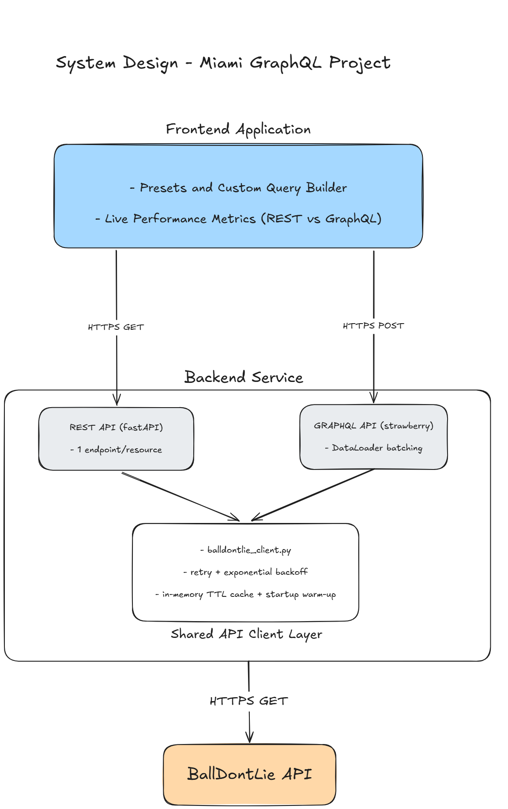

Introduction
I'm learning GraphQL at work and wanted to apply the core concepts to a topic I actually care about: sports data.
Whenever I query NBA stats, I usually have to pass in and parse parameters for every single endpoint. There should be an easier way to get a team's full roster and recent results in one request. That exact tension between REST and GraphQL is what I wanted to explore here.
And as a Heat fan, picking Miami was pretty straightforward.
Data Source Pivot
I usually rely on nba_api for my basketball projects, but I ran straight into an Akamai bot-protection wall, triggering 403 errors and heavy rate limiting.
That rabbit hole introduced me to TLS fingerprinting and cloud-IP blocking. Essentially, Akamai scores incoming requests to detect bot-like behavior, while also blocking calls originating from cloud hosts like AWS, DigitalOcean, or Google Colab (which is where I was first running my scripts) — and even from my own home network, not just the cloud. Getting around this meant either emulating browser handshakes with proxies or finding another route entirely.
Since web scraping wasn't practical on my timeline, I pivoted to the BallDontLie API. Its free tier gave me exactly the dataset I needed, turning a technical roadblock into a pragmatic engineering trade-off between speed and feasibility.
Schema Design Decisions
When designing the schema, I quickly ran into a limitation: the API's free tier didn't provide an active-roster endpoint. Since I was only targeting the current season, I manually compiled the Heat's roster instead.
From there, I structured the GraphQL schema around three core types:
- Player — stores individual metadata like name, jersey number, height, weight, and position.
- Game — captures game details including date, home/visitor status, and final outcome.
- Team — includes resolvers for fetching the team's roster (via the Player type) and a
recentGamesfield to pull their last several matchups.
I built top-level query functions to search by player name, player id, or team. For example, if you want a team's roster with specific player details like position and height, you can fetch it all in a single query:
{
team(id: 16) {
fullName
roster {
firstName
lastName
position
height
}
}
}It's as intuitive as REST, but drastically simplifies the number of round-trip requests needed to fetch nested data.
The N+1 Problem
GraphQL's pitch is easy: ask for exactly the data you need, get back exactly that, in one request.
Here's the setup: I wanted to query five different NBA teams and get each one's recent games, all in a single request:
{
teams(ids: [16, 2, 14, 20, 6]) {
fullName
recentGames(limit: 5) {
date
homeScore
visitorScore
}
}
}From the client's side, this looks like one request. And it is — one HTTP call leaves the browser. But under the hood, my resolver for recentGames was written the naive way: for each team GraphQL resolves, call the games API for that one team. Five teams meant five separate calls to my data source, fired one after another. Add one more call to look up each team's basic info, and I was making six live API calls to answer what looked like a single query.
This is the N+1 problem: N related items (five teams) each triggering their own additional call (+1 per item) to fetch nested data, instead of one batched call for all of them.
The fix is a pattern called batching, and in Strawberry (the Python GraphQL library I used) it's implemented via a DataLoader. Instead of each team independently asking "give me your games" the moment it's resolved, a DataLoader collects all the requests that come in during a single query and fires them together, as one combined call. I rewrote my games-fetching function to accept a list of team IDs instead of just one, wired it into a DataLoader, and reran the exact same query.
The call count dropped from 6 to 2.
Benchmarking!
I built a small instrumentation layer, middleware on both my GraphQL server and my REST twin that logs, for every request, how long it took to process and how many bytes it sent back. Then I ran three scenarios through both APIs: fetching a single player's bio, fetching a team with its roster and recent games, and fetching five teams' recent games at once (the same query from the N+1 section).
The clearest result, by far, was payload size. Because REST endpoints typically return whatever object shape the underlying data source gives them, every field, whether the client wanted it or not, while GraphQL returns only the fields actually requested, the gap between the two grew dramatically as the queries got more relational:
- Player bio only: REST responses ran a few times larger than GraphQL's
- Team + roster + games: REST ballooned to roughly 17x larger
- Five teams' games: REST hit over 30x larger
Timing was another problem handle.
The first problem: my client-side timer was adding roughly 2 seconds to every single request, GraphQL and REST alike, regardless of how much real work either one did. It turned out to be a Windows issue, Python's requests library, when hitting localhost, was trying an IPv6 connection first, timing out, then falling back to IPv4, adding a fixed delay to every call. Once I switched my measurement to read from my server-side middleware logs instead of timing things client-side, that artifact disappeared entirely.
The second problem was closer to a real bug in my own analysis, not just an environmental issue. My first benchmark script computed REST's "average time" by averaging every individual REST call's duration, but a REST client actually needs all three (or five) of those calls to get the data GraphQL gets in one. Averaging in the fast, cached, individual calls alongside the slow, cold, first ones made REST look artificially faster than it really was to actually use. The fix was to sum each REST scenario's calls together per run, then average those totals, comparing "time to get everything the client needed" on both sides, fairly.
For simple, single-object requests, REST and GraphQL performed about the same, there's real overhead in resolving a GraphQL query that roughly cancels out REST's extra round trips at that scale. But for the five-team scenario, GraphQL pulled ahead clearly, and for a structural reason worth naming: REST's five independent calls each risked tripping my API's rate limit independently, while GraphQL's batched DataLoader collapsed that risk down to far fewer underlying requests. In my own logs, REST hit rate-limit retries during this benchmark; GraphQL never did.
GraphQL's real wins here were payload size, request count, and resilience to rate limiting, not raw speed on simple lookups.
The Frontend:
The hardest part was displaying a frontend that made it easy for users to visually understand the differences.
The rate limit itself became a recurring issue in this project. BallDontLie's free tier allows 5 requests per minute, and my demo's "compare 5 teams" scenario alone can burn through that in one click if both the REST and GraphQL sides fire in parallel (which they do, for a fair speed comparison). The fix that actually stuck was warming the cache at server startup,fetching and caching the demo data once, right when the server boots, before any user ever clicks anything. Since NBA game data from a completed season never changes, there's no real downside to caching it aggressively; it's not a workaround so much as the technically correct thing to do for historical data.
Once the core demo was solid, I added one more piece: an interactive query builder. Instead of only being able to click through three fixed scenarios, you can now check which fields you actually want — team name, roster details, recent games — and watch the GraphQL query build itself live as you do it, then run it side-by-side against the equivalent REST calls. It's a small addition, but it's the one part of the demo that actually lets someone feel GraphQL's core promise, instead of just reading about it.
Where GraphQL Loses
It would be dishonest to write a whole post about GraphQL's advantages without being honest where REST still wins.
Caching is genuinely harder. REST gets HTTP caching essentially for free,a GET request to a stable URL can be cached by browsers, CDNs, and proxies with zero extra work. GraphQL, since almost everything goes through a single POST endpoint with a query in the body, doesn't get any of that out of the box. You have to build caching yourself, at the application layer, the way I did with my own TTL cache, which works, but it's real engineering effort REST doesn't require.
There's more server-side complexity. A REST endpoint is a straightforward function: request comes in, you fetch data, you return it. A GraphQL resolver tree means thinking about nested fields, lazy resolution, and the N+1 problem, which simply doesn't exist in the same way for a REST endpoint that always returns one fixed shape.
The learning curve is harder. Every struggle in this post, DataLoader batching, schema design, resolver-level thinking, is a concept a REST API just doesn't ask you to learn. That's a time investment you have to make.
What This Means for a Real Sports Data Platform
This project used one team, three data types, and no live stats, deliberately small in scope, so I could actually finish it and measure it honestly rather than build something sprawling and unfinished.
But the underlying case for GraphQL gets stronger, not weaker, at real scale. An NBA team's engineering org isn't serving one frontend, it's likely serving a mobile app, an internal scouting tool, a broadcast partner's integration, and a public stats site, all wanting different slices of the same underlying player, team, and game data. GraphQL's version has one schema, and each client asks for exactly what it needs, is designed precisely for that situation.
I didn't build this project to prove GraphQL is strictly better than REST. I built it to actually understand, with real numbers, where that tradeoff is.
Architecture
How data flows from BallDontLie's API through the shared caching/batching layer into both servers, and out to the frontend.
